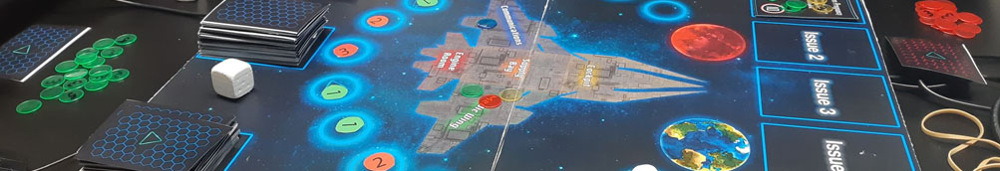

As a lesson in designing and balancing game mechanics I developed a board game with a group. We worked as a team of five to decide on a theme for the game based on current news events, landing on the current SpaceX/Nasa Mars projects. From there we brainstormed a number of game ideas, eventually landing on the idea of a co-op game that had a win condition of getting to Mars successfully.
Initially we planned on having a system where players were assigned a number of movement points each turn and they would use those to move around a ship on the board. When moving to a space, they could fix any issues that were outstanding out of a number of issues that were pulled each turn. We quickly realised this complex movement was over complicated and didn't work for the game, so we decided to keep movement, but simplified. Less spaces were on the board to move between and movement points were taken from your dice roll which also add up to give you points to spend to fix issues.
Each turn, a counter representing the spaceship you're moving within is moved on the board and when it reaches Mars, you've won. To do that, you must keep your issues on-board below 5, completing all of them before being able to land on Mars itself. Added throughout the spaces are icons that prompt to you draw an objective card. Objective cards are a mechanic I introduced during our early play tests as there simply wasn't enough to do each turn. The objectives added a mechanic to work against your team in order to recieve personal points that would put you as the overall winner at the end of the game if you had the most.
The objective cards worked well to add another depth to the game outside of its core loop, however during testing we removed the personal points you gained and introduced team rewards that benefit everyone. Keeping track of personal points gained by working against your team didn't suit our USP of a co-op board game designed with team building in mind. Although you still sometimes work against eachother to complete objectives, it is always for the team's benefit.
As part of the project I developed an online card creator for the team to use that allowed anyone to produce effectively "production-ready" cards for the game. This was very valuable as it sped up our workflow massively and allowed us to playtest with final card designs and iterate on the card's contents without re-editing Photoshop documents!
Linked below is the presentation used to show our playtesting changes and final game concept, as well as a link to the card generator. Also below is our group's rule demonstration video.